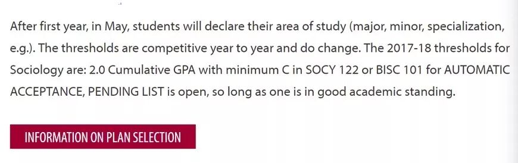
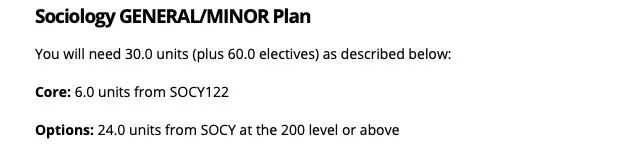
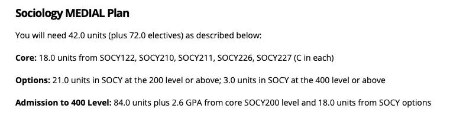
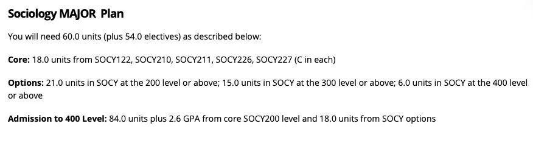

当大家第一次接触到sociology，或者遇到学sociology的同学的时候可能会想，这人咋学个这么个学科？
确实，在大部分留学生都在学cs，econ，engineer的时候，可能sociology并不是一个待选项。
大部分的人可能会觉得sociology不就是什么在国内学的马克思恩格斯巴拉巴拉巴拉主义吗？ 无聊死了！
但其实，我们Queen’s的socy可不仅仅只是如此，下面就一起揭开SOCY神秘的面纱吧。
啥是SOCY？
SOCY是一门复杂又有趣的学科，她不仅仅是要去研究不同的社会理论，看很多很多很多很多的书，同时也在默默中教会大家一种思考方式，一种跳出自己所处的环境，客观的分析日常身边和社会现象的能力。
一入SOCY深似海，从大一之后的课程中不仅仅要学习不同的基础理论，还会学习到包括Psychology; Surveillance; Gender; Criminal Justice等等一系列的领域。所以说SOCY只学什么马克思恩格斯Durkheim理论的锅我们可不背。
Requirement？
SOCY department进入专业的requirement相对于Queen’s其他的department简单一些。
根据2017-2018的标准而言，大一的课程综合达到2.0的GPA，并且SOCY122或者BISC101最低达到c就可以满足大二进入专业。

Degree Plan
SOCY就像其他的art&science department一样，也提供三种不同的degree plan，分别是General/minor; Medial plan；Major。 具体要求请看下图以及官方网站。



此处为官网链接：
https://www.queensu.ca/sociology/undergraduate-program/requirements
SOCY courses
SOCY的必修课主要是:
- SOCY122（introduction to sociology）
- 210 (Social Research Method)
- 211 (Social Statistics)
- 226 (Central Concept in Sociology Theory)
- 227 (Theorizing contemporary Society)
其中4门200level的课程再加上18个unit（6门）sociology的elective course需要最少拿到2.6的GPA 才能够在大三学期末申请大四的专业课。 （划重点！）
选修推荐！
SOCY 273
Social Psychology
这门课对于那些对于社会心理学感兴趣的同学可以考虑上这门课，课程基本上cover了大部分的社会心理理论，以及关于self, identity, attraction, deviance等等一系列的课题。曾几何时，这门课水到不能再水，但是去年开始就换了教授，所以难度上会有很大的提升。
SOCY 284
Sociology of information and communication technology
这门课强烈推荐，TA和教授都超级无敌棒。课堂内容会包括像AI；社会理论对当代科技的互相影响等等，而且grade distribution也很棒，只要按时上课，按时完成作业就会是个easy b+ ~a。
Socy 363
Science, Technology& Society
和284是一个教授，相似的课程内容，在284的基础上深挖，也是只要好好学习天天向上，就easy b+以上。
详情参考：
（https://www.queensu.ca/sociology/sites/webpublish.queensu.ca.doswww/files/files/SOCY363F2018.pdf）
Socy 300&309
这两门课的prof David Murakami Wood是我在Queens见过的最牛****的sociology prof （不接受反驳），主要研究social surveillance相关的课题，Canada Research Chair (Tier II) in Surveillance Studies，他也是Queen’s surveillance center的一员。 可惜他明年要去日本交流一年（哭），所以以后的同学们等他回来可以考虑上他的课。
Socy304
surveillance & empire
详情参考：
最后，
SOCY大部分的作业
都是要求大量的reading还有paper来完成的，
与其他的课程比较,
TA或者prof评分可能不会像数学啊理科那些
对就是对错就是错的评分标准，
考察的更多的是你对於内容的理解和研究，
所以对于socy感兴趣的朋友们快来吧！！！
文字 / Archie
排版 / Lexi
编辑 / Lucas TT
校对 / Kedi Bill
❤️ ❤️ ❤️